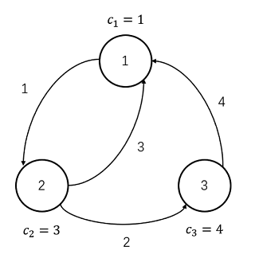

Task A, Day 1
Time limit per test : \texttt{2 s}
Memory limit per test : \texttt{512 MB}
You can submit this problem at:
Description¶
After repelling the invasion of the Legion and more than ten years of recuperation, the Elven Kingdom located on the continent of Bzeroth, has become a thriving paradise again, attracting tourists throughout the world. Little W is a famous foodie who has traveled all over the world, and now he also came to this kingdom.
There are n cities in the kingdom, numbered from 1 to n. The food in city i can provide Little W with a pleasure points of c_i. The cities of the kingdom are connected by m directed roads, numbered from 1 to m. The i-th road starts from city u_i and ends at city v_i, and it takes w_i days to travel along it. In other words, if Little W travels along road i from city u_i on the d-th day, he will reach the city v_i on the (d+w_i)-th day.
Little W plans a travel of T days in the kingdom, more specifically: he will depart from city 1 on Day 0, and finally return to city 1 on Day T. Since Little W is a foodie, whenever he arrives in a city (including the city 1 on Day 0 and Day T), he will taste the food of the city and get the pleasure points it provides. If Little W arrives in the same city multiple times, he will get the pleasure points multiple times. Note that W CANNOT stop in any city during the trip, that is, when he arrives in a city but his trip doesn't finish, he must depart from that city at the same day.
In addition, the Elven Kingdom will hold k food festivals at different times. Specifically, the i-th food festival will be held in city x_i on the t_i-th day. If Little W happens to be in city x_i on Day t_i, he will get an extra pleasure points of y_i when he tastes the food in city x_i. Now Little W would like to ask you, the reception envoy of the Elven Kingdom, to help him calculate the maximum of the sum of pleasure points he can get during his travel.
Input¶
The first line contains 4 integers n (1 \leq n \leq 50), m (n \leq m \leq 501), T (1 \leq T \leq 10^9) and k (0 \leq k \leq 200), indicating the number of cities, roads, days of travel and food festival respectively.
The second line contains n integers c_i (1 \leq c_i \leq 52501), indicating the pleasure point that the food of each city can provide.
Each of the next m lines contains 3 integers u_i, v_i, w_i (u_i \neq v_i, 1 \leq u_i, v_i \leq n, 1 \leq w_i \leq 5), describing a road.
Each of the next k lines contains 3 integers t_i, x_i, y_i (1 \leq t_i \leq T, 1 \leq x_i \leq n, 1 \leq y_i \leq 10^9), describing a food festival.
It's guaranteed that:
- For each city, there are at least 1 road start from it.
- All the t_i are pairwise distinct.
Output¶
Print a single integer — the maximal pleasure points he can get.
If Little W can't return city 1 on Day T, print -1.
Samples¶
Sample 1¶
Input¶
3 4 11 0
1 3 4
1 2 1
2 1 3
2 3 2
3 1 4
Output¶
13
Explanation¶

As the picture shown above, the optimal plan is 1 \rightarrow 2 \rightarrow 1 \rightarrow 2 \rightarrow 3 \rightarrow 1.
- On Day 0, Little W start his travel from city 1, get 1 pleasure point and sets off for city 2.
- On Day 1, Little W arrives at city 2, get 3 pleasure points and sets off for city 1.
- On Day 4, Little W arrives at city 1, get 1 pleasure point and sets off for city 2.
- On Day 5, Little W arrives at city 2, get 3 pleasure points and sets off for city 3.
- On Day 7, Little W arrives at city 3, get 4 pleasure points and sets off for city 1.
- On Day 11, Little W arrives at city 1, get 1 pleasure point and end his travel.
- Little W get 13 pleasure points in total.
So the minimal anxiety is 94.
Sample 2¶
Input¶
4 8 16 3
3 1 2 4
1 2 1
1 3 1
1 3 2
3 4 3
2 3 2
3 2 1
4 2 1
4 1 5
3 3 5
1 2 5
5 4 20
Output¶
39
Explanation¶
The optimal plan is 1 \rightarrow 3 \rightarrow 4 \rightarrow 2 \rightarrow 3 \rightarrow 4 \rightarrow 1.
Sample 3¶
Please check the other samples at NOI/2020/Day1-samples.zip.
Subtasks¶
For partial scores, you can look up at the origin statement (NOI/2020/Day1.pdf).